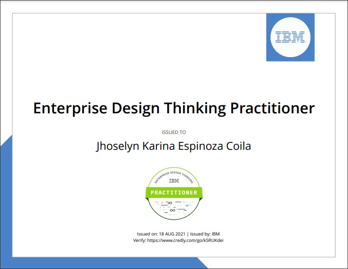
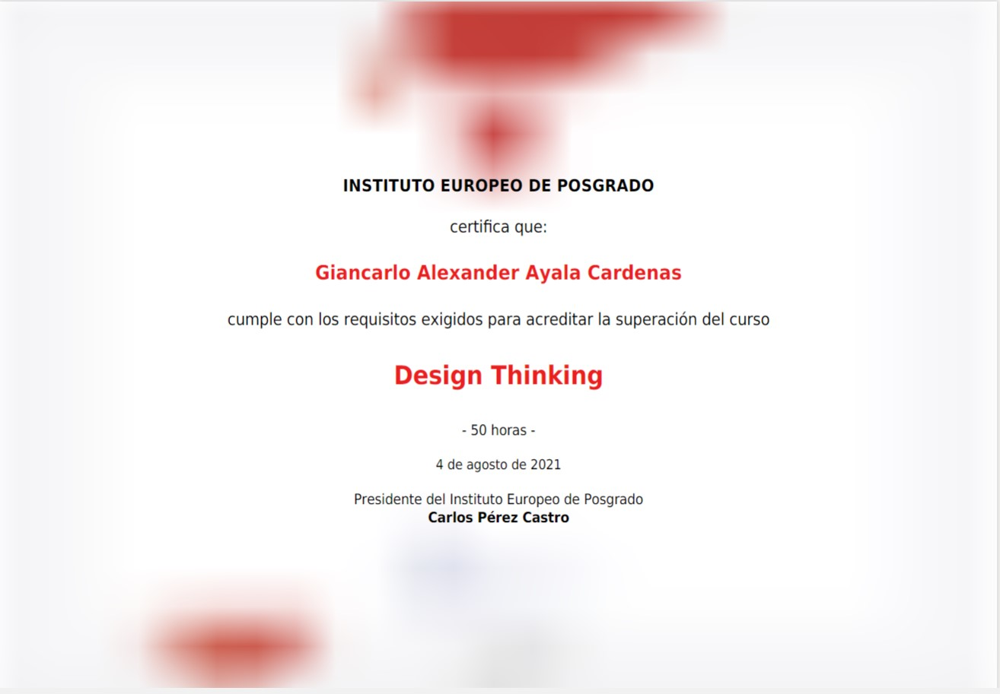

Nuestro proyecto
1Información
Modelo de administración estratégica para el desarrollo de un campus inteligente con fundamentos de Smart City en la universidad de San Martín de Porres de Lima.
2Propósito
La realización del informe tiene como propósito elaborar un modelo estratégico de un Smart Campus con conceptos claves de una Smart City aplicando estos concepto y fundamentos en la Universidad San Martin de Porres
Integrantes

LIDER
Alexander Ayala
QA
Jhoselyn Karina
PROGRAMADOR
Diego Enrique
PROGRAMADOR
Sandro Miguel
PROGRAMADOR
Neyser Breyner
PROGRAMADOR
Jorge Rai

PROGRAMADOR
Jose Carlos
Nuestros servicios

Chat Bot
es un programa de inteligencia artificial (IA) que puede simular una conversación (o un chat) con un usuario en lenguaje natural a través de aplicaciones de mensajería, sitios web, aplicaciones móviles
Azure Services
Es consciente de que la informática en la nube le ahorrará tiempo y dinero a su compañía al realizar la migración del hardware físico del entorno local a una solución en la nube

Azure Devops
Server es un producto de Microsoft que proporciona control de versiones, informes, gestión de requisitos, gestión de proyectos, compilaciones automatizadas, pruebas y capacidades de gestión de versiones
CERTIFICADOS ENTERPRISE PRACTITIONER


CERTIFICADOS DESING THINKING


CERTIFICADOS SCRUM
ARQUITECTURA
1Información
El dispositivo IoT se registra de manera segura en la nube mediante IoT Edge. IoT Hub cumple la función de puerta de enlace en la nube. Por lo tanto, sirve como un agente intermediario entre el dispositivo y los componentes del back-end. La Función de Azure se encarga de transformar los datos luego de pasar por IoT Hub, a JSON para que puedan ser almacenados en Cosmos DB. La información se almacena en Cosmos DB como documentos JSON. La información está disponible para el uso del Cliente/Usuario. La Función de Azure obtendrá la fecha y hora en la que se almacenó la información y debe verificarse que esta esté en el rango determinado para darse como válido. Web App Service compila el aplicativo web, al cual nuestro Cliente/Usuario podrá acceder desde cualquier dispositivo conectado a internet. Azure DevOps se encarga de la administración del proyecto, es decir, la administración del código para que pueda ser compilado y lanzado (CI/CD). Su flujo va de la siguiente manera: El Programador de Azure Smart FIA realiza modificaciones en el código fuente del app web. El código se almacena en un repositorio dentro de Azure Repos..
2Información
CI corre pruebas unitarias mediante Azure Test Plans. CD se genera mediante el componente Azure Pipelines. El código inicial se dirige a la capa de presentación y se implementa mediante Azure Web App Service. El Programador puede supervisar y administrar el código cuantas veces lo requiera. Para implementar el servicio de chatbot se requiere Azure QnA Maker que permite, con el uso de la inteligencia artificial, responder preguntas del Cliente/Usuario de manera natural y conversacional. Azure Language Understanding (LUIS) permite al Cliente/Usuario interactuar con el aplicativo web. Azure Bot Service es el servicio que implementará el bot para que se comunique con el Cliente/Usuario dentro del aplicativo. Para el análisis, monitoreo y detección de errores en el rendimiento del bot y los demás componentes alojados en la nube se usa Azure App Insights. Toda la información necesaria para la programación de estos componentes se almacena en la misma base de datos de Cosmos DB. El chatbot implementado se ejecuta en Web App Service en donde interactúa con el Cliente/Usuario.